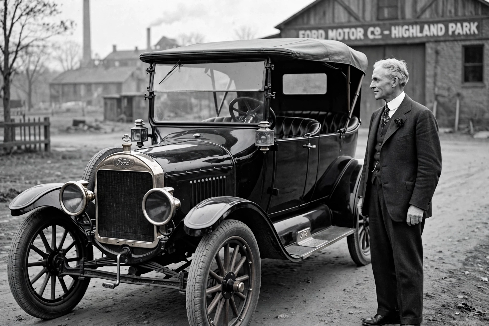

Henry Ford
From Wikipedia, the free encyclopedia

Henry Ford with a Model T.Henry Ford (1863–1947) was an American industrialist, founder of the Ford Motor Company and chief developer of the assembly-line technique of mass production. His Model T (1908) made automobiles affordable to the middle class, and his $5-a-day wage (1914) reshaped industrial labour relations. Ford was also a controversial figure: a pacifist campaigner in the First World War who later published antisemitic writings for which he apologised, and a fierce opponent of unions until 1941.
Early life and ventures
Born on a Michigan farm, Ford built a steam engine as a teenager and became an engineer at Edison Illuminating Company, meeting Thomas Edison, who encouraged his petrol-engine experiments. After his Detroit Automobile Company and the Henry Ford Company (which became Cadillac under others) failed, he incorporated Ford Motor Company in 1903 with the Dodge brothers among his suppliers and investors.
Model T and mass production
The Model T\'s simple, rugged design and falling price (from $850 to under $300) put the world on wheels; the moving assembly line at Highland Park (1913) cut chassis assembly from 12½ hours to about 93 minutes. By the 1920s half the cars on Earth were Model Ts.
Later years
Ford resisted replacing the ageing Model T until the Model A (1927), resisted unions through Harry Bennett\'s Service Department (including the 1937 Battle of the Overpass), and published The International Jew in his newspaper — later retracted with an apology. He founded Greenfield Village and the Henry Ford Museum, and died in 1947 having built one of the largest fortunes of the age.